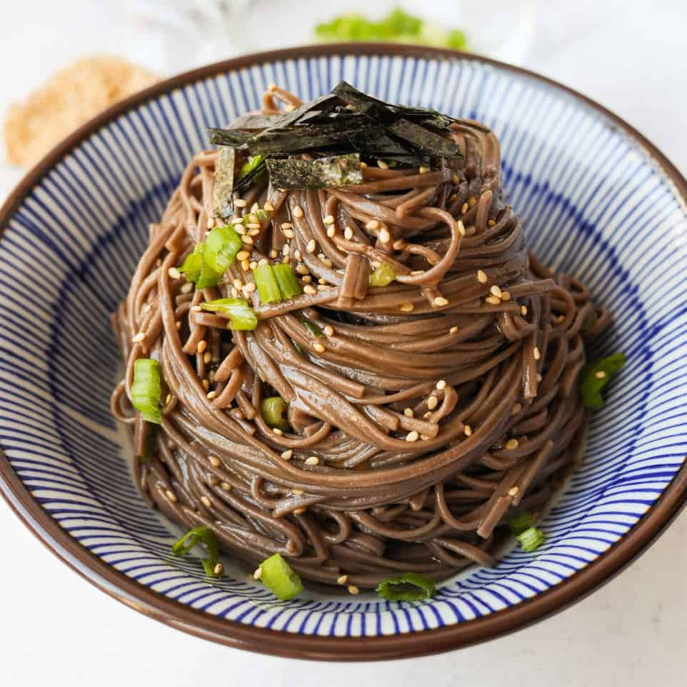

Soba Noodle Recipe

Description
Sesame Soba Noodles. Springy cold buckwheat noodles seasoned with a soy
nutty flavor sauce, spring onions, sesame seeds and roasted seaweed.
Ingredients
- regular soy sauce
- sesame oil
- rice vinegar
- soba noodles
Steps
- In a small bowl, combine Dressing ingredients. Set aside.
-
In a large pot of water, bring to a boil over medium-high heat. Once
water is boiling, add buckwheat noodles and boil according to package
directions, about 5-6 minutes.
-
Strain noodles and rinse noodles off with cold water until they are cool
to touch. Strain out any excess water. Transfer strained noodles to a
large bowl.
-
Season noodles with Dressing sauce, sesame seeds and finely chopped
green onions. Mix well until noodles are lightly coated in sauce.
-
Serve and garnish optionally with a little bit of thinly cut nori strips
on top. Enjoy!